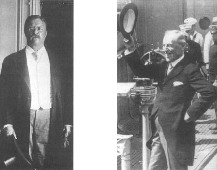

Theodore Roosevelt, Ağustos 1905 Woodrow Wılson, Temmuz 1919
Bu yüzyılın başlarına kadar yalnızlık eğilimi Amerikan dış politikasına egemen oldu. Sonra iki faktör Amerika’yı dünya işlerine itti: Hızla büyüyen gücü ve Avrupa’nın merkez olduğu uluslararası sistemin yavaş yavaş çöküşü, iki başkan, bu değişime damgasını vurdu. Theodore Roosevelt ve Woodrow Wilson. Uluslararası gelişmeler, isteksiz bir ulusu girdaba sürüklerken, bu adamlar hükümetlerin dizginlerim ellerinde tutuyorlardı. Yalnızlık politikasından ayrılmayı karşıt felsefelere dayanarak savunmakla beraber, Amerika’nın dünya gelişmelerinde çok hayati bir rol oynaması gerektiğini her ikisi de kabul etmişti.
Roosevelt, bir güç dengesinin sofistik bir analistiydi. Ulusal çıkarları bunu gerektirdiği için ve aynı zamanda Amerika’nın katılımı olmadan küresel güç dengesinin olanaksız olduğunu düşündüğü için Amerika’nın uluslararası arenada rol alması üzerinde ısrarla duruyordu. Wilson’a göre, Amerika’nın küresel rolü bir çeşit göreve dayanıyordu: Amerika’nın güç dengesi için bir yükümlülüğü yoktu; ancak kendi ilkelerini bütün dünyaya yayma görevi vardı. Wilson yönetimi zamanında Amerika, Amerikan düşüncesinin klişelerini yansıtan ve Eski Dünya diplomatları için devrimci bir değişiklik anlamına gelen ilkelerini ilan ederek dünya gelişmelerinde başlıca anahtar rolü oynamıştır. Bu ilkelere göre barış, demokrasinin yaygınlaşmasına bağlıdır; devletler de bireylerle aynı ahlaki kriterlere göre değerlendirilmelidir; ulusal çıkar ise, evrensel hukuk sistemine uymaktan ibarettir.
Güç dengesine dayanan Avrupa diplomasisinin görmüş geçirmiş üyelerine, Wilson’ın, dış politikanın sonuç olarak ahlaki temeller üzerine oturtulması gerektiği görüşü, garip, hatta biraz da ikiyüzlü görünmüştür. Ancak tarih, çağdaşlarının karşıt görüşleri üzerinde durmazken Wilsonizm canlılığını hep korumuştur. Wilson, barışı anlaşmalar yerine, ortak güvenlik yoluyla koruması düşünülen evrensel dünya örgütünün, Milletler Cemiyeti’nin de fikir babasıdır. Her ne kadar Wilson kendi ülkesini dahi bu fikrin faydalarına inandıramamışsa da, fikir yaşamaya devam etmiştir. Daha da ötesi, Amerikan dış politikası onun dönüm noktası niteliğindeki başkanlığından beri Wilson idealizminin yolunda yürümüş ve bugüne kadar da yürümeye devam etmiştir.
Amerika’nın uluslararası ilişkilere olan kendine özgü yaklaşımı, aniden veya kendi başına bir ilhamın sonucu olarak gelişmemiştir. Cumhuriyetin ilk yıllarında Amerikan dış politikası, yeni devletin bağımsızlığını kuvvetlendirmekten ibaret olan Amerikan ulusal çıkarının karmaşık bir yansımasıydı. Rakipleriyle bir mücadeleye girmek zorunda kalmadan hiçbir Avrupa ülkesi, kendisi için bir tehdit oluşturmadığı için, Amerika’nın Kurucu Ataları çıkarlarına uygun olduğu zaman, hor görülen güç dengesini yönlendirmeye son derece hazır olmuşlardır; gerçekten de Fransa ile Büyük Britanya arasında manevra yaparak yalnızca, Amerika’nın bağımsızlığını korumak değil, aynı zamanda sınırlarını da genişletmek için olağanüstü becerikli olmaları gerekirdi. Fransız Devrimi savaşlarında hiçbir tarafın kesin bir zafer kazanmasını istemediklerinden tarafsız olduklarını açıklamışlardır. Jefferson, Napoleon Savaşları’nı karadaki diktatör (Fransa) ile denizdeki diktatör (Büyük Britanya){1} arasında bir yarışma olarak tanımlamıştır; başka bir deyişle, Avrupa mücadelesindeki tarafların ahlaki yönden eşit olduklarını söylemiştir. Bağlantısızlık politikasının bir çeşit ilk şeklini uygulayan yeni devlet, o zamandan beri ortaya çıkan birçok yeni devlet gibi tarafsızlığı bir pazarlık aracı olarak kullanmanın faydalarını keşfetmiştir.
Aynı sıralarda Birleşik Devletler, Eski Dünya yöntemlerini reddetmeyi, toprak genişlemesini reddetmeye kadar ileri de götürmemiştir. Aksine, daha başlangıçtan beri Birleşik Devletler, Amerikalarda genişleme politikasını olağanüstü bir kararlılıkla uygulamıştır. 1794’ten sonra, bir dizi antlaşmayla Kanada ve Florida sınırlarını Amerika’nın çıkarına olacak şekilde çözüme kavuşturmuş, Mississippi Nehri’ni, Amerikan ticaretine açmış ve İngiliz Batı Hint Adaları’nda Amerikan ticari çıkarlarını yerleştirmeye başlamıştı. Bu genişleme, Mississippi Nehri’nin batısında kalan ve İspanyol toprağı olan Florida ve Teksas toprakları üzerinde hak iddia edebilecek durum yaratan ve çok büyük genişlikteki sınırı belirlenmemiş toprakları, yeni devlete katan Louisiana’nın 1803’te Fransa’dan satın alınması ile en yüksek noktaya ulaşmıştır ki, bu da büyük güç olmak için temel oluşturmuştur.
Satışı yapan Fransız imparatoru Napoleon Bonaparte, bu tek-yanlı işlem hakkında Eski Dünya’ya özgü şöyle bir açıklamada bulunmuştur: “Bu toprak alımı, Birleşik Devletler’in gücünü ebediyen perçinlemektedir ve bu suretle Büyük Britanya’ya da, sonunda denizde onu alt edecek bir rakip sağlamış oluyorum.”{2} Amerikalı devlet adamları, Fransa’nın sahip olduğu toprakları satmasına ne gerekçe gösterdiğine hiç aldırmadılar. Onlara göre, Eski Dünya’nın güç politikasının eleştirilmesi, Amerika’nın Kuzey Amerika boyunca toprak kazanmasıyla ters düşmüyordu. Çünkü Amerika’nın batıya doğru genişlemesini bir dış politika konusu olmaktan çok, Amerika’nın bir içişi olarak görüyorlardı.
Bu ruh hali içinde James Madison, orduların, vergilerin ve diğer tüm “çoğunluğu, azınlığın egemenliği altına sokan araçların”{3} habercisi olarak savaşı, bütün kötülüklerin kaynağı biçiminde eleştirmiştir. Onun yerine gelen James Monroe, batı yönünde genişlemeyi, bunun Amerika’yı büyük bir güç yapmak için gerekli olduğu temeline dayanarak savunmakta hiç bir çelişki görmemiştir:
“Herkes şunu açıkça görmelidir ki, adil sınırlar içinde kalmak şartıyla, toprak genişlemesi her iki (eyalet ve federal) hükümete de daha büyük hareket serbestisi sağlar; güvenliklerini sağlamlaştırır ve diğer her yönden bütün Amerikan halkı üzerinde iyi etkiler gösterir. Büyük veya küçük, toprağının büyüklüğü bir ulusun birçok özelliğini belirler. Kaynaklarının, nüfusunun ve fiziksel gücünün sınırlarını gösterir. Kısacası, büyük güç ile küçük güç arasındaki farkı ortaya koyar.”{4}
Zaman zaman Avrupa güç politikasının yöntemlerini kullanmakla birlikte, yeni ulusun liderleri, kendi ülkelerini farklı kılan ilkelere sadık kalmışlardır. Avrupa güçleri, potansiyel egemen güçlerin ortaya çıkmasını önlemek için sayısız savaş vermiştir. Amerika’da güç ve uzaklık kombinezonu, herhangi bir sorun ortaya çıktıktan sonra onun üstesinden gelinebileceği yönünde bir güven yaratmıştır. Yaşamlarını sürdürmek için çok daha kısıtlı hareket alanları olan Avrupa ulusları, değişiklik olasılığına karşı koalisyonlar oluşturmuşlardır; oysa Amerika, herhangi bir gerçek değişikliğe göre politikasını ayarlayabilecek kadar uzaktır.
Her ne sebeple olursa olsun, “birbirinin içine girmiş” anlaşmalara karşı George Washington’un yönelttiği uyarının jeopolitik temeli de buydu. Washington’a göre:
“Kendimizi yapay bağlarla, Avrupa politikasının sıradan iniş çıkışlarına veya onun dostluk veya düşmanlıklarının çakışmasına, ya da çatışmasına bağlamamız akıllıca bir hareket değildir. Bizim ayrı ve uzak durumumuz, bizi değişik bir rota izlemeye çağırıyor ve aynı zamanda bunu mümkün de kılıyor. “{5}
Yeni ulus, Washington’un uyarısını pratik ve jeopolitik bir kural olarak değil de, ahlaki bir kural olarak kabul etmiştir. Özgürlük ilkesinin merkezi olan Amerika, büyük okyanusların kendisine sağladığı güvenliğini, ilahi takdirin bir işareti olarak yorumlamayı ve eylemlerine, güvenlik marjı yerine, başka herhangi bir ulus tarafından paylaşılmayan üstün bir ahlaki değer yüklemeyi doğal bulmuştur.
Cumhuriyetin ilk yılları dış politikasını bir bütün olarak bir arada tutan şey, Avrupa’nın bitmek tükenmek bilmeyen savaşlarının, kötü devlet yönetiminde kullanılan bencil metotların bir sonucu olduğu inancıdır. Avrupalı liderler, uluslararası sistemlerini bencil çıkarların rekabetinden uyum doğacağı inancı üzerine oturturken, Amerikalı meslektaşları, devletlerin, birbirine güvenmeyen rakipler gibi değil, işbirliği yapan ortaklar gibi davrandığı bir dünya düşünüyorlardı. Amerikalı liderler, devletlerin ahlaka uygun hareket edip etmediğinin, bireylerin ahlaklılığından farklı bir ölçütle değerlendirilmesi gerektiği şeklindeki Avrupa görüşünü reddetmişlerdir. Jefferson’a göre:
“insanlar ve devletler için tek bir ahlaki sistem” vardır. “Bu da, koşullar ne olursa olsun bütün yükümlülüklere tam sadakat, hatta uzun vadede, iki tarafın da çıkarlarını koruyacak şekilde açık ve cömert olmaktır.”{6}
Zaman zaman yabancıları çok sinirlendirse bile, Amerika’nın sesinin tonundaki erdemlilik, Amerika’nın yalnızca onu eski ülkeye bağlayan hukuki bağlara karşı değil, aynı zamanda Avrupa’nın sistemine ve değerlerine de başkaldırmış olduğu gerçeğini göstermiştir. Amerika, Avrupa’da savaşların bu kadar sık olmasını özgürlük ve insan onuru değerlerini reddeden hükümet kurumlarının egemen olmasına bağlamaktadır. Thomas Paine şöyle yazıyor: “Savaş, eski yapıda bir hükümet etme sistemi olduğundan, ulusların birbirine karşı beslediği düşmanlık duygusu, hükümetlerinin politikalarının sistemin ruhunu ayakta tutmak için uyandırdığı bir düşmanlıktan başka bir şey değildir... Yanlış bir hükümet sistemi tarafından insanlar birbirine düşman hale getirilmediği sürece, insan insanın düşmanı değildir.”{7}
Barışın, her şeyden önce demokratik kurumların gelişmesine bağlı olduğu görüşü, Amerikan düşüncesinin bugüne kadar ayrılmaz bir parçası olmuştur. Geleneksel Amerikan düşünce biçimi, istikrarlı bir şekilde demokrasilerin birbirleriyle savaş yapmadıkları merkezindedir. Aleksandr Hamilton, cumhuriyetlerin, diğer hükümet şekillerine göre, özünde daha barışçı olduğu görüşüne karşı çıkmıştır:
“Sparta, Atina, Roma ve Kartaca hepsi cumhuriyetti; bunlardan ikisi, Atina ve Kartaca, ticari özellikte birer cumhuriyettiler. Bununla beraber, ister saldırı, ister savunma amaçlı olsun, komşuları olan monarşiler kadar devamlı savaş halinde idiler. Britanya hükümetinde halkın temsilcileri milli yasama meclisinin bir kolunu oluşturmaktadır. Ticaret, bu ülkenin yüzyıllardan beri izlediği temel uğraştır. Yine de, dünyada ancak birkaç ülke, Büyük Britanya’dan daha sık savaş yapmıştır.”{8}
Ancak Hamilton, küçük bir azınlığı temsil etmektedir. Şimdi olduğu gibi o zaman da Amerikan liderlerinin ezici bir çoğunluğu, Amerika’nın dünya barışına katkısı olarak kendi değerlerinin yayılması biçiminde özel bir sorumluluğu olduğu inancındaydılar. O zaman da anlaşmazlıklar, daha çok bu sorumluluğun yerine getirileceği yöntemle ilgili idi. Amerika, dış politikasının temel hedefi olarak özgür kurumları yaygınlaştırmak için aktif biçimde çaba harcamalı mıdır? Yoksa kendi örneğinin diğer ülkelere etkisine mi güvenmelidir?
Cumhuriyet’in ilk yıllarında egemen olan görüş, oluşmakta olan Amerikan ulusunun demokrasi davasına en iyi demokratik prensipleri kendi ülkesi içinde uygulayarak hizmet edeceği şeklindeydi. Thomas Jefferson’ın sözleriyle Amerika’da “adil ve sağlam bir cumhuriyet”, dünyanın diğer bütün ulusları için “dikilmiş bir anıt ve örnek” olacaktır.{9} Bir yıl sonra, Jefferson, Amerika’nın “bütün insanlık adına hareket ettiği” temasına şu sözlerle döndü:
“...başkalarına nasip olmayıp bize teveccüh eden şartlar, bir toplumun, bireylerine sağlayabileceği özgürlük ve kendi kendini yönetim alanının derecesinin ne olduğunu kanıtlama görevini bize vermiştir.”{10}
Amerikan liderlerinin, Amerika’nın davranış biçiminin ahlaki dayanakları ve özgürlük sembolü olarak önemi üzerinde ısrarla durması, Avrupa diplomasisinin klişelerinin reddedilmesine yol açmıştır: Güç dengesi bencil çıkarların rekabetinden doğan nihai uyum sonucu oluşmuş ve güvenlik endişeleri medeni hukuk ilkelerini geçersiz hale getirmiş, başka bir deyişle, devletin amaçları, kullandığı araçları haklı çıkarmıştır.
Benzeri görülmemiş bu fikirler, XIX. yüzyıl boyunca kalkınmasını gerçekleştiren ve iyi çalışan kurumları ve değer yargıları doğrulanan bir ülke tarafından ileri sürülüyordu. Amerika, yüksek prensipler ile hayatta kalmanın gerekleri arasında bir çatışma olduğunun farkında değildi. Uluslararası anlaşmazlıkları gidermek için ahlakçılıktan yardım umulması, zamanla tam Amerikan tarzı bir ıstırap ve benzeri görülmemiş bir belirsizlik doğurmuştur. Amerikalılar, dış politikalarını, kişisel hayatlarındaki aynı manevi kararlılıkla yürütmek zorundaysalar, güvenlik konusu nasıl analiz edilecekti? Gerçekten de bu, ayakta kalmanın, ahlaklı olmaya feda edilebileceği anlamına mı geliyordu? Yoksa Amerika’nın özgür kurumlara bağlılığı, en bencil amaçlı eylemlere bile otomatik olarak bir ahlaklılık havası mı veriyordu? Bu doğru ise, Amerikalıların görüşleri ile Avrupalıların raison d’état görüşü, yani devletin işlediği fiillerin, yalnızca başarılarına göre değerlendirileceği görüşü arasında ne fark vardı?
Profesör Robert Tucker ve Prof. David Hendrickson, Amerikan düşüncesindeki bu çelişkiyi parlak bir şekilde analiz etmişlerdir:
“Jefferson ‘in devlet adamlığının en büyük çıkmazı, görünüşte devletlerin sonuç olarak güvenliklerini sağlamak ve arzularını gerçekleştirmek için başvurdukları araçları reddetmesi ve aynı anda bu araçların kullanılmasını gerektiren arzulan reddetmekte isteksiz olmasıdır. Başka bir deyişle, Jefferson, Amerika’nın, her iki hedefe de ulaşmasını istemiştir: Yani gücün kullanılmasının normal sonuçlarının kurbanı olmadan, güçlü olmanın avantajlarından yararlanmak”{11}
Bugüne kadar iki yaklaşım arasındaki gidip gelmeler, Amerikan dış politikasının başlıca temalarından birisi olmuştur. 1820’ye kadar, Amerika, bu iki yaklaşım arasında ikisine de sahip olma olanağı tanıyan bir uzlaşma sağladı. Kuzey Amerika kıtası boyunca genişlemesini kaderin acıklı bir tecellisi (manifest destiny) olarak değerlendirirken, okyanusun ötesinde olanları güç dengesi politikasının suçlanacak sonuçları olarak eleştirmeye devam etti.
XX. yüzyılın başına kadar Amerikan dış politikası esas itibariyle çok basitti: Ülkenin açık kaderini gerçekleştirmek ve deniz aşırı işlere bulaşmaktan uzak durmak. Amerika, bunun olanaklı olduğu yerlerde, demokratik idarelerden yanaydı; ama gerektiğinde, bu tercihini gerçekleştirmek için harekete geçmekten geri durmayı da bilmiştir. O zamanki Dışişleri Bakanı John Quincy Adams, bu tavrı 1821’de şöyle özetlemiştir:
“Her nerede özgürlük ve bağımsızlık bayrağı açılmış veya açılacak ise, Amerika’nın kalbi ve iyi niyetleri oradadır. Fakat Amerika canavarları ortadan kaldırmak için denizaşırı girişimlerde bulunmaz. Herkese özgürlük ve bağımsızlık için iyi dileklerde bulunur. Ancak Amerika yalnızca kendisinin şampiyonu ve kendi hakkının koruyucusudur.”{12}
Amerika’nın bu kendi kendini sınırlama politikasının diğer yüzü, eğer gerekirse, Avrupa diplomasisinin bazı yöntemlerini de kullanarak, Avrupa güç politikasını Batı Yarımküresi’nden uzak tutma karandır. Bu politikayı ilan eden Monroe Doktrini, 1820’lerde İspanya’daki devrimi bastırmak için Prusya, Rusya ve Avusturya arasında yapılan Kutsal İttifak’ın bir sonucu olarak ortaya çıktı, ilke olarak başkalarının içişlerine karışmayı reddeden Büyük Britanya da Kutsal İttifak’ı Batı Yarımküresi’nde kabul etmekte aynı derecede isteksizdi.
İngiliz Dışişleri Bakanı George Canning, Amerika kıtasındaki İspanyol kolonilerini Kutsal îttifak’ın ele geçirmesinden korumak için Birleşik Devletler’e birlikte hareket etme önerisinde bulunmuştur. Amacı, İspanya’da olanlar bir tarafa, Latin Amerika’nın herhangi bir Avrupa gücünün kontrolü altına girmemesini sağlamaktı. Kolonilerini kaybetmiş bir İspanya’nın hiç de değerli bir ödül olmayacağını düşünen Canning, bu durumun, ya müdahale etme cesaretini kıracağını veya bunu gereksiz kılacağını varsaymıştır.
John Quincy Adams İngiliz teorisini anlamıştı; fakat İngilizlerin gerekçelerine de güvenmedi. 1812’de Washington’ın İngilizler tarafından işgal edilmesinden sonra, eski anavatanı Büyük Britanya’nın yanında yer almak için vakit henüz çok erkendi. Böylece Adams, Amerika’nın tek-taraflı bir kararla Avrupa sömürgeciliğini Amerikalardan uzaklaştırması için Başkan Monroe’yu zorlamıştır.
1823’te ilan edilen Monroe Doktrini, Birleşik Devletler’i Avrupa’dan ayıran okyanusu, iki kıtayı ayıran bir hendek haline getirmiştir. O zamana kadar Amerikan dış politikasının en önemli kuralı, Birleşik Devletler’in Avrupa’daki güç kavgasına hiçbir biçimde bulaşmaması ilkesi idi. Monroe Doktrini, Avrupa’nın da Amerika’nın işlerine karışmaması gerektiğini ilan ederek bir sonraki adımı atmıştır. Monroe’nun Amerikan işlerinden anladığı ise, bütün Batı Yarımküresi olarak gerçekten
Bunun da ötesinde, Monroe Doktrini kendisini prensip açıklamalarıyla sınırlamamıştır. Yeni devletin, Batı Yarımküresi’nin dokunulmazlığını sağlamak için savaşa da gidebileceği konusunda Avrupa devletlerini cesaretle uyarmıştır. Birleşik Devletler’in Avrupa gücünün “bu yarımkürenin herhangi bir parçasına doğru” genişlemesini, “barışımız ve güvenliğimiz için bir tehlike” şeklinde göreceğini ilan etmiştir.{13}
Son olarak dışişleri bakanından iki yıl önce Başkan Monroe, o kadar iyi ifade edilmemiş olsa da, açıkça Avrupa’daki anlaşmazlıklara karışmak niyetinde olmadığını açıklamıştır: “Avrupa güçlerinin kendilerini ilgilendiren konulardaki savaşlarına hiçbir şekilde katılmayız; bunu yapmak politikamızla da bağdaşmaz.”{14}
Amerika aynı anda hem Avrupa’ya arkasını dönüyor hem de Batı Yarımküresi’nde genişlemek için ellerini serbest bırakıyordu. Monroe Doktrini’nin şemsiyesi altında Amerika, herhangi bir Avrupa kralının rüyalarından –ticaretini ve etkisini genişletmek, toprak elde etmek– farklı olmayan bir politika izliyordu; kısacası güç politikası uygulamaya mecbur kalmadan kendisini büyük bir güç haline getiriyordu.
Amerika’nın genişleme arzusu ile Amerika’nın Avrupa’ya göre daha saf ve ilkeli bir ülke olduğu konusundaki inancı hiçbir zaman çalışmamıştır. Genişlemesini bir dış politika sorunu olarak görmediğinden, Birleşik Devletler gücünü Kızılderililer, Meksika ve Teksas üzerinde rahatlıkla ve hiçbir vicdan rahatsızlığı duymadan kullanmıştır. Özetlersek, bir ceviz kabuğu içindeki Birleşik Devletler’in dış politikası, bir dış politikaya sahip olmamaktı.
Louisiana’nın şahsıyla ilgili olarak Napoleon’un yaptığı gibi, Canning de Eski Dünya’nın güç dengesinin dengelenmesi için Yeni Dünya’yi yarattığıyla övünebilir. Çünkü Büyük Britanya Kraliyet Deniz Kuvvetleri ile Monroe Doktrini’ni destekleyeceği işaretini vermişti. Amerika, Avrupa’nın güç dengesini ancak Kutsal İttifak’ı Batı Yarımküresi’nden uzak tutacak ölçüde dengeleyecekti. Geri kalanlar için, Avrupa güçleri Amerika’nın katılımı olmadan dengeyi korumak zorundaydılar.
Yüzyılın geri kalan kısmında, Amerikan dış politikasının ana teması, Monroe Doktrini’nin uygulanmasını yaygınlaştırmaktı. 1823’te Monroe Doktrini, Batı Yarımküresi’nden uzak durmaları için Avrupa güçlerini uyardı. Monroe Doktrini yüzyılını doldurduğunda, anlamı, Amerika’nın Batı Yarımküresi üzerindeki egemenliğini haklı çıkaracak biçimde adım adım genişletilmişti. 1845’te Başkan Polk, Teksas’ın Birleşik Devletler’e bağlanmasının “kendisinden daha güçlü başka bir yabancı devletin müttefiki veya bağımlısı” olmasını ve böylece Amerika’nın güvenliğine yönelik bir tehdit oluşturmasını önlemek için zorunlu olduğunu açıkladı.{15} Başka bir deyişle, Monroe Doktrini tıpkı Avrupa güç dengesinin yaptığı gibi, yalnız var olan bir tehdide karşı değil, üstü kapalı bir tehdit olasılığına karşı da Amerika’nın müdahalesini haklı çıkarmaktaydı.
İç savaş, Amerika’nın toprak genişlemesi uğraşını kısa bir süre için durdurdu. Amerikan dış politikasının şimdi birinci derecede ilgilendiği konu, Konfederasyon’un, Avrupa devletleri tarafından tanınmasını ve bu suretle Kuzey Amerika toprakları üzerinde çok devletli bir sistemin ve bununla birlikte Avrupa diplomasisinin güç dengesi politikasının oluşmasını önlemekti. Fakat 1868’e kadar Başkan Andrew Johnson, Monroe Doktrini yoluyla genişleme politikasını haklı çıkaran eski tutuma geri döndü; bu sefer de Alaska satın alınıyordu:
“Bu toplulukların yabancı mülkiyetinde veya kontrolünde olması, Birleşik Devletler’in büyümesini engeller ve etkisini azaltır. Buralarda, kronikleşmiş devrim ve anarşi de aynı derecede zararlı olabilir.”{16}
Uygulamada Büyük Güç denilen devletler tarafından fark edilmemiş olmakla beraber, Amerika kıtasının bir ucundan öbür ucuna kadar genişlemeden daha önemli bir şey gerçekleşiyordu: Dünyanın en güçlü ülkesi olan Birleşik Devletler, onların kulübüne yeni üye olarak katılıyordu. 1885’te Birleşik Devletler üretimde dünyanın en büyük sanayi gücü olarak Büyük Britanya’yı geçmişti. Yüzyılın başlangıcına kadar Birleşik Devletler, Almanya, Fransa, Avusturya-Macaristan, Rusya, Japonya ve İtalya’nın hepsinden daha fazla enerji tüketiyordu.{17} İç savaş ile XX. yüzyılın başı arasındaki devrede, Amerikan kömür üretimi %800, çelik ray üretimi %523, demiryolu uzunluğu %567 ve buğday üretimi %256 oranında artmıştı. Göçler de Amerika’nın nüfusunun ikiye katlanmasını sağladı. Ayrıca büyüme sürecinin gittikçe hızlanması da bekleniyordu.
Hiçbir ülke, bunu küresel etkiye çevirmeye çalışmadan böyle bir büyüme yaşamamıştır. Amerikan liderleri heyecanlı idiler. Başkan Andrew Johnson’m Dışişleri Bakanı Seward, Kanada’yı ve Meksika’nın büyük kısmım içine alan ve Pasifik’in derinliklerine kadar giden bir imparatorluğun hayalini kuruyordu. Grant yönetimi, Dominik Cumhuriyeti’ni topraklarına katmak istedi ve Küba’nın alınması işiyle de ilgilendi. Bunlar, Disraeli veya Bismark gibi onunla çağdaş olan Avrupa liderlerinin anlayabileceği ve onaylayacağı girişimlerdi.
Fakat Amerikan Senatosu, iç öncelikler üzerine dikkatini yoğunlaştırarak bütün genişleme projelerini sona erdirdi. Kara ordusunu küçük (25.000 asker) ve deniz kuvvetlerini zayıf tuttu. 1890 yılına kadar, Amerikan kara ordusu, dünyada, Bulgaristan’dan sonra 14. sırada geliyordu ve Amerikan deniz kuvvetleri de, Amerika sanayi gücü İtalya’nın 13 katı iken, İtalya’nınkinden küçüktü. Amerika uluslarası konferanslara katılmayan ikinci sınıf devlet işlemi görüyordu. 1880 yılında Türkiye diplomatik misyonlarını küçültürken İsveç, Belçika, Hollanda ve Birleşik Devletler’deki elçiliklerini kapattı. Aynı dönemde, Madrid’deki bir Alman diplomata, Washington’a atanmak veya maaşında bir indirim yapılmasını kabullenmek önerisinde bulunuldu.{18}
Bir ülke, Amerika gibi iç savaş sonrası sahip olduğu güç düzeyine geldikten sonra, bu gücünü uluslararası arenada önemli bir pozisyona dönüştürmek arzusuna sonsuza kadar direnemez. 1880’lerin son yıllarında Amerika, deniz kuvvetlerini kuvvetlendirmeye başladı ki, deniz gücü 1880’de Şili, Brezilya ve Arjantin’den küçüktü. 1889 sonunda Deniz Kuvvetleri Bakanı Benjamin Tracy, bir savaş gemisi için lobi yapıyor ve çağdaş deniz tarihçisi Alfred Thayer Mahon ise bu talebin gerekçelerini hazırlıyordu.{19}
Her ne kadar İngiliz Kraliyet Deniz Kuvvetleri Amerika’yı, Avrupa güçlerinin sataşmasından korumuşsa da, Amerikan liderleri, Büyük Britanya’nın, ülkelerinin koruyucusu olduğunu kavrayamadılar. XIX. yüzyıl boyunca, Büyük Britanya, Amerikan çıkarlarına karşı en büyük rakip, Kraliyet Deniz Kuvvetleri de en ciddi stratejik tehdit olarak değerlendirildi. Amerika pazılarını göstermeye başladığı zaman, Büyük Britanya’yı, bizzat Büyük Britanya’nın yerleşmesinde önemli rol oynadığı Monroe Doktrini’ni ileri sürerek, Batı Yarımküresi’nde etkili olmaktan alıkoymak istemesine şaşmamak gerek.
Birleşik Devletler, meydan okuma konusunda da pek çekingen değildi. 1895’te Dışişleri Bakanı Richard Olney, Büyük Britanya’yı Monroe Doktrini’ni ileri sürerek eşitsizliği konusunda uyardı. “Bugün” diyordu, “Birleşik Devletler bu kıta üzerinde egemendir ve vatandaşları hakkındaki kararı hukuka uygun olarak verir. Sonsuz kaynaklarıyla birleşen soyutlanmış pozisyonu Amerika’yı durumun hâkimi haline ve herhangi bir gücün veya bütün güçlerin zarar veremeyeceği bir duruma getirmektedir.”{20} Amerika’nın güç politikasını reddetmesi, açıkça Batı Yarımküresi’nde uygulanmadı. 1902’de Büyük Britanya, Orta Amerika’daki başlıca egemen güç olma iddiasını terk etmişti.
Batı Yarımküresi’nde üstün duruma geçen Birleşik Devletler, uluslararası ilişkilerin daha geniş olan arenasına girmeye başladı. Amerika neredeyse kendisine rağmen bir dünya gücü olmuştu. Bir büyük devlet, dış politika uygulamak istemediğini ısrarla söylerken, kıtada boydan boya genişleyerek Amerika’nın bütün kıyılarında üstünlük kurdu. Bu süreç sonunda, tercihleri ne olursa olsun, Amerika kendisini, önemli bir uluslararası faktör yapan bir tür gücü yönetirken bulmuştur. Amerika’nın liderleri, hâlâ esas dış politikalarının, insanlığın geri kalan bölümünü aydınlatan bir ışıldak olmak olduğu iddiasında ısrar edebilirlerdi; fakat bazılarının, Amerika’nın gücünün, ona günün diplomatik konuları hakkında görüşlerinin dinlenmesi hakkını verdiğini ve kendilerini uluslararası sistemin bir parçası yapmak için bütün insanlığın demokrat olmasını beklemeye gerek olmadığını fark ettiklerini de reddetmek mümkün değildir.
Hiç kimse bu mantığı Theodore Roosevelt’ten daha açık ve keskin bir şekilde açıklamamıştır. Roosevelt, etkisini küresel çapta hissettirmenin Amerika’nın görevi olduğunu ve Amerika’nın dünyayla ulusal çıkarları çerçevesinde ilişki kurması gerektiğini ısrarla savunan ilk başkandır. Kendinden öncekiler gibi Roosevelt de Amerika’nın dünyada hayırlı bir rol oynadığına inanmıştı. Ancak onlardan farklı olarak Roosevelt, Amerika’nın hiçbir bağlantıya girmemek suretiyle çıkarlarını korumaktan öte, gerçek bir dış politika çıkarları olduğunu savunuyordu. Roosevelt, Birleşik Devletler’in bir erdem sembolü değil, diğerleri gibi bir devlet olduğunu kabul ederek yola çıktı. Amerika, çıkarları başka ülkelerin çıkarları ile çatıştığı zaman, üstün gelmek için kendi gücünü kullanmak zorundaydı.
Roosevelt, ilk adım olarak, o dönemin emperyalist doktrinlerinden yararlanarak, Monroe Doktrini’ne en müdahaleci yorumu getirdi. Roosevelt, Monroe Doktrini’nin “doğal bir sonucu” olarak 6 Aralık 1904’te “bazı uygar uluslar” için genel bir müdahale hakkı yarattı ki, Batı Yarımküresi’nde bu hak yalnız Birleşik Devletler’e aitti: “... Batı Yarımküresi’nde Birleşik Devletler’in Monroe Doktrini’ne bağlılığı, onun istemeye istemeye de olsa bazı yanlış ve yetersiz girişimlere karşı uluslararası polis gücü kullanmasını gerektirebilir.”{21}
Roosevelt’in bu konudaki uygulaması, fikrini açıklamasından önce oldu. 1902’de Amerika, Avrupa bankalarına olan borçlarını ödemesi için Haiti’ye baskı yaptı. 1903’te Amerika’nın körüklemesi ile Panama’daki huzursuzluk tam bir ayaklanmaya dönüştü. Amerika’nın yardımı ile yerel halk, Kolombiya’dan bağımsızlığını alabilmek için uğraş verdi; fakat daha önce Washington, sonradan Panama Kanalı adı verilen kanalın her iki yakasında da Amerikan egemenliğini kurdu. 1905 ‘te Birleşik Devletler, Dominik Cumhuriyeti üzerinde mali koruma hakkı elde etti. 1906’da ise Amerikan askerleri Küba’yı işgal etti.
Roosevelt’e göre, Batı Yarımküresi’nde kuvvete dayanan diplomasi, Amerika’nın yeni küresel rolünün bir parçasıydı, iki okyanus artık Amerika’yı dünyanın geri kalan kısmından soyutlamak için yeterli genişlikte değildi. Amerika uluslararası sahneye çıkmak zorundaydı. Roosevelt, Kongre’ye 1902 tarihli bir mesajında “Uluslararası politik ve ekonomik ilişkilerin giderek artan bir şekilde karşılıklı bağımlı ve çapraşık hale gelmesi, gittikçe artan bir şekilde bütün uygar ve iyi organize olmuş güçlere, doğru dürüst bir dünya polisliği yapmak görevini yüklüyor” diyordu.{22}
Roosevelt’e göre, Amerika’nın, uluslararası ilişkilere olan yaklaşımında kendine özgü bir tarihsel konumu vardır. Hiçbir Amerikan başkanı, Amerika’nın dünyadaki rolünü, onun yaptığı gibi tam anlamıyla ulusal çıkar çerçevesinde görmemiş, ya da ulusal çıkan güç dengesi ile birlikte tanımlamamıştır. Roosevelt, vatandaşlarının Amerika’nın dünyanın en çok güvendiği ülke olduğu görüşünü paylaşmaktadır. Ançak onların birçoğundan farklı olarak, Amerika’nın yalnızca uygar değer yargılarının barışı koruyabileceğine veya kaderini gerçekleştirebileceğine inanmıyordu. Dünya düzeninin doğasını algılama biçimi de, Thomas Jefferson’dan çok, Palmerston veya Disraeli’ye yakındı.
Büyük bir başkan, halkının geçmişi ile geleceği arasında bir köprü kurarak aynı zamanda bir eğitici olmalıdır. Roosevelt, barışın uluslar arasında olağan bir durum olduğuna, kişi ve devlet ahlakı arasında fark olmadığına ve Amerika’nın dünyanın geri kalan bölümünü etkileyen karışıklıklardan güvenli bir şekilde korunmuş olduğuna inanarak yetişen bir halka, özellikle ciddi bir doktrin öğretti. Çünkü Roosevelt, bu düşüncelerinin her birini, kanıtlan ile reddetmişti. Roosevelt’e göre uluslararası hayat mücadele demekti ve Darwin’in, en güçlünün hayatta kalacağı hakkındaki teorisi, tarihte kişisel ahlaktan daha iyi bir yol göstericiydi. Roosevelt’in görüşüne göre, uysal insanlar, ancak güçlü olurlarsa dünyaya sahip olabilirler. Amerika, ulaşılacak bir amaç değil, büyük bir güçtür, potansiyel olarak en büyük güçtür. Roosevelt, Büyük Britanya’nın XIX. yüzyıla egemen olması gibi, ılımlılığı ve akıllılığıyla, istikrar, barış ve ilerleme için çalışacak büyük bir güce sahip bir ülke olarak Amerika’nın da, XX. yüzyıla şekil vermesi için ulusunu dünya sahnesine yönelten bir başkan olmayı ümit etmiştir.
Roosevelt, dış politikaya ilişkin olarak Amerikan düşüncesine egemen olmuş dindar, kendini Tanrı’ya adamış sabırsız bir insandı. Uluslararası hukukun istenen sonucu verebileceğine inanmıyordu. Bir ulusun kendi gücüyle koruyamadığı bir şey, uluslararası toplum tarafından da korunamaz. Roosevelt, tam o sıralar uluslararası bir konu olarak ortaya çıkan silahsızlanmayı da reddetmiştir:
“Henüz yanlış davrananları etkin bir şekilde kontrol edecek... herhangi bir uluslararası güç oluşturma olasılığı bulunmamaktadır ve bu şartlar altında, büyük ve güçlü bir devletin, kendi haklarını koruma olanağından kendi isteği ile vazgeçmesi, hem aptalca, hem de kötü bir şeydir. Özgür ve kültürlü insanların, bütün despot ve barbarların silahlı olduğu bir devirde, kendi isteği ile kendilerini güçsüz kılmaları kadar hiçbir şey kötülüğü davet edemez.”{23}
Roosevelt, dünya hükümeti hakkında konuşmaya sıra gelince, daha da serttir:
“Ben Wilson-Bryan’in hayali barış anlaşmalarına, yerine getirilemeyecek sözlere, gerekli güçle desteklenmemiş bütün kâğıt parçalarına güvenmek biçimindeki tavırlarına tiksinti ile bakıyorum. Hem bir ulus ve hem de tüm dünya için, devamlı ulusal dış politika tavrı olarak Bryan veya Bryan-Wilson’ın tutumu yerine, Büyük Frederick ve Bismarck geleneğine sahip olmak kesinlikle daha iyidir... Güçle desteklenmemiş masum, ağzı süt kokan haklılık, haklılıktan yoksun güç kadar kötü ve hatta ondan daha da zararlıdır.”{24}
Roosevelt, güçle yönetilen bir dünyada eşyanın doğal düzeninin “etki alanları” kavramında yansımasını bulduğuna inanmıştı. Bu kavram, dünyanın geniş toprakları üzerinde belli güçlere, örneğin Batı Yarımküresi’nde Birleşik Devletler’e, Hint Yarımadası’nda Büyük Britanya’ya etki tanıyan bir kavramdı. 1908’de Roosevelt, Japonya’nın Kore’yi ele geçirmesine göz yumdu. Çünkü Roosevelt’in düşüncesine göre, Japon-Kore ilişkileri bir anlaşma kurallarına veya uluslararası hukuka göre değil, bu iki ülkenin göreceli gücüne göre belirlenmeliydi.
“Kore, kesin olarak Japonya’nındır. Bir antlaşma ile Kore’nin bağımsız olması gerektiğinin kararlaştırıldığı-doğrudur. Fakat Kore, bu antlaşmanın uygulanmasını zorlayacak güce sahip değildir ve başka bir devletin, Korelilerin kendileri için yapmaya muktedir olmadıkları bir şeyi onlar için yapmaya kalkışmalarını beklemek de olanaksızdır.”{25}
Böyle Avrupa tarzı görüşleri olan Roosevelt’in, güç dengesi politikasına, Richard Nixon’dan başka hiçbir Amerikan başkanının yaklaşamadığı ölçüde sofistike bir şekilde yaklaşması, hiç de hayret uyandıran bir şey değildir. Önceleri Roosevelt, Amerika’yı Avrupa güç dengesinin ayrıntıları içine sokmaya gerek görmedi; çünkü bunun az, ya da çok kendi kendine işleyen bir sistem olduğunu düşünüyordu. Yalnızca bu yargının yanlışlığının kanıtlanması halinde Amerika’yı dengenin yeniden kurulması için müdahale etmeye zorlayabilirdi. Ancak Roosevelt, yavaş yavaş Almanya’nın Avrupa dengesi için bir tehlike oluşturduğunu görmeye başladı ve Amerika’nın ulusal çıkarlarını, Büyük Britanya’nın ve Fransa’nın ulusal çıkarlarıyla birlikte tanımlamaya başladı.
Bu durum 1906’da Fas’ın geleceğini belirlemek üzere toplanan Algeciras Konferansı’nda kendisini gösterdi. Bir Fransız üstünlüğünü şimdiden önlemek için “açık kapı” prensibi üzerinde ısrar eden Almanya, orada önemli ticari çıkarları olduğuna inandığı Amerika’nın temsilcisinin de konferansta bulunmasını istedi. Amerika’nın Fas’taki konsolosu konferansa katıldı; ama oynadığı rol Almanları hayal kırıklığına uğrattı. Roosevelt, aslında çok geniş olmayan Amerikan çıkarları jeopolitik görüşüne göre geri plana attı. Bunlar, Henry Cabot Lodge’un Fas krizinin en kritik devresinde Roosevelt’e yazdığı bir mektupta şöyle açıklanmaktadır: “Fransa, bizimle ve Büyük Britanya ile beraber olmalıdır –kendi bölgemizde ve birliğimiz içinde. Bu, ekonomik ve politik bakımdan sağlam bir düzenlemedir.”{26}
Roosevelt, Avrupa’da başlıca tehdidin Almanya olduğunu düşünürken, Asya’da da Rusya’nın arzularından endişe duyuyordu ve bu yüzden Rusya’nın en büyük rakibi olan Japonya’ya karşı olumlu davranıyordu. Roosevelt, “Dünyada hiçbir ulus, Rusya kadar gelecek yılların yazgısını elinde tutmamaktadır” diye açıklamada bulundu.{27} 1904’te Japonya, Büyük Britanya ile yaptığı anlaşmadan güç alarak Rusya’ya saldırdı. Her ne kadar Roosevelt Amerika’nın tarafsız olduğunu açıkladıysa da, Japonya’ya eğilim gösterdi. Rusya’nın zaferinin “uygarlık için bir darbe” olacağını söylüyordu.{28} Japonya, Rus donanmasını yok ettiği zaman da sevinerek “Japon zaferinden son derece memnunum; çünkü Japonya bizim oyunumuzu oynuyor” dedi.{29}
Roosevelt, Rusya’nın güç dengesi sahnesinden tamamen silinmesinden çok, zayıflamasını yeğliyordu. Çünkü güç dengesi diplomasisinin kurallarına göre, Rusya’nın aşırı derecede zayıflaması, onun yarattığı tehdidin yerini Japonya’nın yaratacağı tehdidin alması anlamına gelebilirdi. Roosevelt, Amerika’nın çıkarlarına en uygun sonucun, “Rusya’nın Japonya’yla karşı karşıya bırakılması ve böylece her birinin diğeri üzerinde ılımlılık yaratacak bir etki bırakması” olduğu kanısındaydı.{30}
Yüksek ilkeli bir iyilikseverlik politikasından çok, jeopolitik gerçekçilikten hareket eden Roosevelt, hem Japon zaferini sınırlandırmak, hem de Uzakdoğu’da dengeyi korumak için bir barış anlaşması üzerinde çalışmak üzere her iki savaşan tarafın temsilcilerini de Oyster Koyu’ndaki evine davet etti. Sonuç olarak Roosevelt, onun yerine geçen Wilson’dan sonra, son derece Amerika dışı görünebilecek güç dengesi politikasının kuralları ve nüfuz alanları gibi temellere dayanan bir anlaşma sağladığı için Nobel Barış Ödülü’ne layık görülen ilk Amerikalı oldu.
Roosevelt 1914’te Almanya’nın Belçika ve Lüksemburg’u işgal etmesine, her ne kadar bu işgal her iki ülkenin de tarafsızlığını kuran antlaşmaları açıkça ihlal ediyorsa da, ilk önce hiçbir duygu göstermeden yaklaştı:
“Bu anlaşmaların ortadan kaldırılması veya göz ardı edilmesi konusunda şu veya bu şekilde taraf tutmuyorum. Devler ölüm kalım savaşına girdikleri zaman, onlar bir o yana, bir bu yana savrulurken, bu büyük ve ağır savaşçıların ayakları altında dolaşan herkes, eğer bunu yapmak tehlikeli ise ezilmeğe mahkûmdur.”{31}
Avrupa’da savaşın patlak vermesinden birkaç ay sonra, Roosevelt Belçika’nın tarafsızlığının ortadan kaldırılması konusundaki ilk görüşünü değiştirdi. Ancak onu ilgilendiren konu, Almanya’nın işgalinin hukuka aykırı olması değil, fakat bunun güç dengesine karşı yönelttiği tehditti. “...Almanya’nın bu savaşı kazanması, İngiliz Donanması’nı batırması ve İngiliz İmparatorluğu’nu ortadan kaldırması durumunda, bir iki yıl sonra bu ülkenin, Güney ve Orta Amerika’ya egemen olmak için baskıda bulunmayacağına kim inanır?”{32}
Roosevelt, Amerika’nın ağırlığını, Üçlü İtilâf Devletleri tarafına koyabilmesi için büyük çapta silahlanma başlattı. Bir Alman zaferinin olası ve Birleşik Devletler için tehlikeli olacağını düşünüyordu. Mihver (ittifak) Devletlerinin zaferi, İngiliz Kraliyet Donanması’nın korunmasını faydasız hale getirebilir ve Alman emperyalizminin Batı Yarımküresi’nde de kendisini göstermesine imkân tanıyabilirdi.
Roosevelt’in Atlantik’in İngiliz Donanması tarafından kontrol edilmesinin Alman hegemonyasından daha güvenli olduğuna olan inancı, kültürel eğilim ve ortak tarihi deneyim gibi gözle görülmeyen unsurlardan kaynaklanıyordu. Gerçekten de Büyük Britanya ile Amerika arasında, Birleşik Devletler-Almanya ilişkilerinde mevcut olmayan güçlü kültürel bağlar vardı. Bundan başka, Birleşik Devletler, Büyük Britanya’nın denizleri yönetmesine alışmıştı ve bundan herhangi bir endişe duymuyordu; ayrıca Büyük Britanya’nın Amerikalarda genişleme planları olduğundan da endişe duymuyordu. Almanya ise, güven vermiyordu. 3 Ekim 1914’te Roosevelt (Almanya’nın Belçika’nın tarafsızlığını göz ardı etmesinin kaçınılmazlığı hakkındaki önceki görüşünü unutarak) Washington’daki İngiliz elçisine şunları yazıyordu:
“Eğer halen başkan olsa idim, 30 veya 31 Temmuz’da (Almanya’ya karşı) harekete geçerdim.”{33}
Bir ay sonra Rudyard Kipling’e yazdığı bir mektupta Roosevelt, kendi inançlarına dayanarak Amerika’nın Avrupa savaşına sokulmasının güçlüğünü itiraf etmiştir. Amerikan halkı, bu kadar sıkı bir şekilde güç politikası koşullan içinde tanımlanan bir hareket yönü izlemeğe isteksizdi:
“İnandığım her şeyin savunmasını yaparsam halkıma bir yararım olmazı çünkü beni izlemezler. Bizim halkımız dar görüşlüdür ve uluslararası konuları anlamaz. Sizin halkınız da dar görüşlüydü; ancak onlar bu konular hakkında bizimkiler kadar anlayışsız değildir. Geniş okyanusun varlığı nedeniyle halkımız halen devam etmekte olan çatışmada korkacak bir şey olmadığına ve bununla ilgili bir sorumluluğu da bulunmadığına inanmaktadır.”{34}
Dış politika hakkındaki Amerikan düşüncesi, Theodore Roosevelt’te en yük-noktasına varmış olsaydı, bu, Avrupa devlet yönetimi prensiplerinin Amerikan koşullarına uydurulması biçiminde bir evrim olarak tanımlanabilirdi. O zaman Roosevelt de, Amerikalarda üstünlüğünü sağlayan, ABD’nin ağırlığını hissettirmeye başladığı dönemde görevde olan başkan olarak değerlendirilebilirdi. Fakat Amerikan dış politika düşünce biçimi Roosevelt’le son bulmadı; bunun olması da mümkün değildi. Kendi rolünü, halkının deneyimleri ile sınırlandıran bir lider kendisini durgunluğa mahkûm eder; halkının deneyimlerini aşmasını bilen bir lider ise, halkı tarafından anlaşılmamak tehlikesi ile karşılaşır. Amerika’yı, ne deneyimleri, ne de değerleri, Roosevelt’in kendisi için belirlediği role hazırlamıştır.
Tarihin bir başka ironisi de Amerika’nın, Roosevelt’in hayal ettiği liderlik rolünü sonunda onun sağlığında oynaması, fakat bunu onun saçma bulduğu prensipler adına ve küçümsediği bir başkanın rehberliğinde yapmasıdır. Woodrow Wilson, geleneksel Amerikan ayrımcılığının bir sembolü ve Amerikan dış politikasının egemen entelektüel ekolünün yaratıcısı idi. Öyle bir ekol ki, Roosevelt tarafından en hafif deyimle konu dışı, en ağır deyimle uzun vadeli Amerikan çıkarlarına zıt.
Amerika’nın en büyük başkanları içinde, yerleşmiş bütün devlet yönetimi prensipleri çerçevesinde düşünüldüğü zaman, Roosevelt, bu iki başkan arasında açıkça daha inandırıcı argümana sahip olanıdır. Bununla beraber, ağır basan Wilson olmuştur. Bir yüzyıl sonra Roosevelt başarılarından dolayı hatırlandı; fakat Amerikan düşüncesine şekil veren yine de Wilson olmuştur. Roosevelt, zamanında dünya işlerini yöneten devletler arasında uluslararası politikanın nasıl işlediğini öğrenmişti. Uluslararası sistemin işleyişi hakkında onun kadar bilgiye sahip başka bir Amerikan başkanı yoktur. Ancak Wilson da Amerikan motivasyonunun temellerini çok iyi kavramıştı ki, bunların en önemlisi, Amerika’nın kendisini diğer uluslar gibi bir ulus olarak değerlendirmemesiydi. Moral tarafsızlık noktasından hareketle, sürekli değişen bir dengeyi korumak amacıyla güçteki küçük değişmeleri devamlı olarak kontrol eden Avrupa tarzı diplomasinin gerektirdiği teorik ve pratik temel Amerika’da yoktu. Gücün gerçekleri ve verdiği dersler ne olursa olsun, Amerikan halkı, kendisini diğerlerinden ayıran özelliğin, özgürlüğün uygulanması ve yayılması olduğuna inanıyordu.
Amerikalılar, ancak bir konu, ülkelerinin diğer ülkelerden farklı olduğu algılamaları ile kesişirse, büyük işlere yönlendirilebilirler. Büyük devletler diplomasisinin işleyiş metoduna entelektüel olarak iyi uyum sağlamış olmakla birlikte, Roosevelt’in yaklaşımı, Birinci Dünya Savaşı’na girmeleri gerektiğine vatandaşlarını inandıramadı. Diğer taraftan Wilson, halkının duygularını, yabancı liderler için büyük ölçüde anlaşılmaz olan, ama moral yönden yücelten argümanlar yoluyla yönlendirdi.
Wilson’ın başarısı, hayret uyandıracak bir başarıydı. Güç politikasını reddeden Wilson, Amerikan halkını nasıl hareketlendireceğini çok iyi biliyordu. Politikaya oldukça geç girmiş bir akademisyen olan Wilson, Cumhuriyetçi Parti’de Taft ile Roosevelt arasındaki çekişmeden yararlanarak seçilmişti. Wilson, Amerika’nın içgüdüsel yalnızlık politikasının, Amerikan halkının ideallerinin benzersizliği üzerinde işlenerek yenilebileceğini kavramıştı. Önce tarafsızlığı şiddetli bir şekilde savunarak yönetiminin barışa bağlılığını gösterdikten sonra, yalnızlık politikası taraftarı bir ülkeyi adım adım savaşa soktu. Bunu da, her türlü bencil ulusal çıkarı reddedip, Amerika’nın ilkelerinin yüceltilmesinden başka bir çıkar gütmediğini belirterek yaptı.
Wilson, 2 Aralık 1913’teki devletin durumu ile ilgili ilk Ulusa Sesleniş konuşmasında, sonradan Wilsonizm olarak tanınan prensiplerin ana çizgilerini ortaya koydu. Wilson’ın görüşüne göre, uluslararası düzenin temeli, denge değil evrensel hukuk, ulusal savlar değil, ulusal güvenilirlikti. Bazı tahkim kararlarının onaylanmasını isteyen Wilson, kuvvetin değil, tarafları bağlayan tahkim kararlarının uluslararası anlaşmazlıkların çözümlenmesinde başvurulacak metot olması gerektiği görüşünde idi:
“Birleşik Amerika ile diğer devletler arasındaki anlaşmazlıkların çözümlenmesi için olası bir tek ölçüt olup, bu ölçütün iki unsuru vardır: Kendi şerefimiz ve dünya barışına karşı olan yükümlülüğümüz. Yeni anlaşma yükümlülükleri kurulması ve kabul edilmiş olanların yorumlanması için böyle bir test kolaylıkla yapılmalıdır.”{35}
Ne güçle ve ne de politik iradeyle desteklenmiş, kulağa hoş gelen ilkeler kadar Roosevelt’i tedirgin eden bir şey olamazdı. Bir dostuna şöyle yazıyordu: “Kan ve demir politikası ile süt ve su politikası arasında bir seçim yapmak gerekirse, kan ve demir politikasından yanayım! Bu politika, yalnız ulus için değil, uzun vadede dünya için de daha iyidir.”{36}
Aynı şekilde, Roosevelt’in Avrupa’daki savaşa savunma harcamalarının arttırılması biçiminde cevap verilmesi önerisi de Wilson’a anlamsız geliyordu. 8 Aralık 1914’teki ikinci Ulusa Sesleniş konuşmasında Wilson –ki dört aydan beri savaş Avrupa’da bütün şiddeti ile devam ediyordu– Amerika’nın silahlanmasının arttırılmasını reddediyordu; çünkü bu tutumun “kendi nefsimize itimadı kaybettiğimizin” işareti olacağını; savaş sonunda “savaş nedenlerinin bize dokunmayacağını, savaşın var oluşunun, dostluk için fırsatlar ve hizmetler yaratacağını...” söylüyordu.{37}
Wilson’ın görüşüne göre, Amerika’nın etkisi, bencillikten uzak oluşuna dayanmaktadır. Amerika böyle kalmalıydı ki, sonunda savaşan taraflar arasına saygın bir hakem olarak girebilsin. Roosevelt, Avrupa’daki savaşın, özellikle de bir Alman zaferinin sonunda Amerika’nın güvenliğini tehdit edeceğini belirtmişti. Wilson ise, savaşın Amerika’yı gerçekten ilgilendirmediğini ve Amerika’nın bir arabulucu olarak ortaya çıkması gerektiğini düşünmüştü. Avrupa’daki savaş, Amerika’nın güç dengesinden daha yüksek olan değer yargılarına olan inancı dolayısıyla uluslararası ilişkilere yeni ve daha iyi bir yaklaşım başlatması için önemli bir fırsat yaratmıştır.
Roosevelt, bu görüşlerle alay ediyordu ve Wilson’u, 1916’daki seçimlerde yeniden seçimi kazanabilmek için halkın yalnızlıktan yana olan duygularını sömürmekle suçluyordu. Gerçekte Wilson’ın politikasının temel noktası, yalnızlık politikasının tamamen tersiydi. Wilson’ın açıkladığı düşünce, Amerika’nın dünyadan elini eteğini çekmesi değil, onun değerlerinin evrensel olarak uygulanması ve zamanla bu değerlerin yaygınlaştırılması için Amerika’nın yükümlülük üstlenmesiydi. Wilson, Jefferson’dan beri gelenekselleşen Amerikan düşünce biçimini bir kez daha ortaya koyuyor; fakat bunu bir çeşit görev ideolojisinin hizmetine sokuyordu:
Wilson, Amerika’nın moral yönden benzersiz olduğu görüşüne bir de evrensel boyut kattı:
“Başka herhangi bir ulusun gücünden korkmamız olanaksızdır. Biz ticaret alanında veya başka herhangi bir barışçı alanda rakip kıskançlığı içinde değiliz. Biz kendi hayatımızı kendi istediğimiz şekilde yaşamak istiyoruz; fakat başkalarının da aynı şekilde istedikleri gibi yaşamalarını arzu ediyoruz. Biz dünyanın bütün uluslarının gerçek dostuyuz; çünkü kimseyi tehdit etmiyoruz; kimsenin malında gözümüz yok ve kimseyi devirmek niyetinde de değiliz.”{38}
Başka hiçbir ulus, uluslararası liderlik iddiasını, bencil olmama ilkesi üzerine dayandırmamıştır. Diğer bütün uluslar, ulusal çıkarlarının diğer toplumların ulusal çıkarları ile uyumlu olup olmamasına göre değerlendirilmesini istemişlerdir. Oysa Woodrow Wilson’dan George Bush’a kadar Amerikan başkanları, liderlik rolünün en önemli özelliği olarak, ülkelerinin hiçbir zaman bencil olmadığını göstermişlerdir. Ne Wilson, ne de ondan sonra gelenler, Amerika’nın bencil olmama iddiasının, daha az yüksek ilkelere sahip olan yabancı liderler için belirsizlik yarattığı gerçeği ile bugüne kadar yüz yüze gelmek istememişlerdir. Ulusal çıkarlar hesaplanabilir; bencil olmamanın tarifini ise, bunu uygulayanın kendisi yapar.
Bununla beraber, Wilson’a göre Amerikan toplumunun bencil olmayan doğası, ilahi bir lütfun göstergesidir:
“Allah’ın takdiri ile bu kıta başkaları tarafından kullanılmamış olarak bırakıldı; özgürlüğü ve insan haklarını her şeyden çok seven barışçı bir ulus gelsin, yerleşsin ve bencil olmayan bir birlik kursunlar diye bekletildi.”{39}
Amerikan değerlerinin ilahi bir lütuf olduğu iddiası, Amerika’ya, Roosevelt’in hayal edebildiğinden daha yaygın bir küresel rol veriyordu. Çünkü Roosevelt güç dengesini geliştirmek ve bu denge içinde, Amerika’nın rolünü gittikçe büyüyen gücüyle orantılı hale getirmekten başka bir şey istememişti. Roosevelt’in görüşüne göre, Amerika birçok ulustan daha güçlü ve büyük devletlerden oluşan seçkin bir grubun üyesi olmakla birlikte, diğer uluslar arasında bir ulus olabilir ve aynı zamanda dengenin kurallarına da bağlı kalabilirdi.
Wilson, Amerika’yı bu düşüncelerden tamamen uzak bir noktaya getirdi. Güç dengesini hor gören Wilson, Amerika’nın rolünün “bencilliğimizi değil, büyüklüğümüzü kanıtlamak”{40} olduğunda ısrar etti. Bu doğru olsa idi, Amerika’nın kendi değer yargılarını kendisine saklama hakkı yoktu. Wilson, 1915 gibi erken bir tarihte, Amerika’nın güvenliğinin, insanlığın geri kalan bölümünün tümünün güvenliğinden ayrılamayacağı şeklinde benzeri görülmemiş bir doktrin ortaya attı. Bu, şu demekti: “Bundan böyle Amerika’nın görevi, dünyanın neresinde olursa olsun her türlü saldırıya karşı koymaktır.”:
“Biz kesintiye uğramadan gelişme, doğruluk ve özgürlük prensipleri üzerine kurulu olan kendi hayatımızın bozulmadan islemesini istediğimiz için, nereden gelirse gelsin bizim hiçbir zaman başvurmayacağımız bir eylem olan saldırıyı reddediyoruz. Ulusal gelişmemizi güven içinde ve kendi koyduğumuz kurallar içinde sağlamakta ısrarlıyız. Bundan da fazlasını yapıyoruz. Bunları başkaları için de istiyoruz. Kişisel özgürlük ve serbest ulusal gelişme konularındaki içtenliğimizi yalnızca bizi etkileyen olaylara ve ilişkilere ayırmıyoruz. Bunu, dünyanın her yerindeki bağımsızlığın ve doğruluğun engebeli yollarında yürümeye çalışan insanlar için hissediyoruz.”{41}
Amerika’yı iyiliksever bir dünya polisi olarak hayal eden bu politika, ikinci Dünya Savaşı’ndan sonra gelişecek olan sınırlandırma politikasının da habercisiydi.
En coşkulu zamanında dahi Roosevelt, bu kadar yaygın bir küresel müdahaleciliği hayal bile edemezdi. Fakat o bir savaşçı-devlet adamı idi; Wilson ise Mesih-Papaz rolündeydi. Devlet adamları, hatta savaşçılar, bütün dikkatlerini içinde yaşadıkları dünyaya yöneltirler; peygamberler için ise “hakiki” dünya, kurmak istedikleri dünyadır.
Wilson, Amerikan tarafsızlığının doğrulanması olarak başlattığı politikayı, küresel bir haçlı seferinin temellerini oluşturacak bir öneriler paketi haline dönüştürdü. Wilson’ın görüşüne göre, Amerika’nın özgürlüğü ile dünyanın özgürlüğü arasında özde bir fark yoktu. Kılı kırk yararı ince yorumların yapıldığı ilmi fakülte toplantılarında harcanan zamanın boşa gitmemiş olduğunu kanıtlayan Wilson, George Washington’ın yabancı politik bağlantıları konusunda yaptığı uyarıyla aslında ne demek istediğinin olağanüstü bir yorumunu geliştirdi. Wilson, “yabancı” kelimesini öyle bir şekilde yeniden tanımladı ki, ilk başkan bunu duysa kuşkusuz çok şaşırırdı. Wilson’a göre Washington’un demek istediği, Amerika’nın, başkalarının çıkarları için bağlantılara girmekten kaçınması gerektiğiydi. Ama Wilson, insanlığı ilgilendiren hiçbir şey “bize yabancı olamaz veya bizimle ilişkisiz olamaz.”{42} diye düşünüyordu. Böylece, artık Amerika’nın elinde dünya işlerine karışmak için sınırsız bir izin vardı.
Devlet Kurucusu Baba’nın yabancı bağlantılara karşı uyarısından küresel müdahalecilik için ruhsat çıkarmak ve sonunda savaşa karışmayı kaçınılmaz hale getiren bir tarafsızlık felsefesi geliştirmek, gerçekten olağanüstü bir zekâ kıvraklığını gösteriyor. Wilson daha iyi bir dünya hakkındaki görüşlerini geliştirmek yoluyla ülkesini dünya savaşına giderek daha çok yaklaştırdıkça, Amerika’nın bir yüzyıl süren kış uykusundan sonra öyle bir canlılık ve idealizm uyandırdı ki, Amerika ancak bu uykudan sonra uluslararası arenaya daha tecrübeli partnerlerinin bilmediği bir sağlık ve dinamizmle girebilirdi. Avrupa diplomasisi, tarihi boyunca kimi zaman sertleşmiş, kimi zaman da aşağıdan almıştı; devlet adamları, olayları, kolayca parçalanabildiğini gördükleri hayallerin, sonunda kaybolan büyük umutların ve insan sağgörüsünün kırılganlığına kurban edilen ideallerin prizmasından görüyordu. Bu sınırlamalardan haberi olmayan Amerika, kendine özgü olduğu kabul edilen değer yargılarını, herkese uygulanabilir evrensel prensipler haline dönüştürürken, tarihin sonunu değilse bile, kesinlikle anlamsızlığını cesurca açıklıyordu. Böylece Wilson, hiç olmazsa bir süre için güven içindeki Amerika ile kirlenmemiş Amerikan görüşleri arasındaki gerginliği düşürmüş oldu. Amerika, Birinci Dünya Savaşı’na, ancak evrensel özgürlüklerin savaşçısı rolünde ve yalnızca kendi adına değil, fakat tüm insanlık adına girebilirdi.
Almanya’nın sınırsız denizaltı savaşı ilan etmesi ve Lusitania’yı batırması, Amerika’nın savaş ilanının en önemli nedeni oldu. Fakat Wilson, Amerika’nın savaşa girişini, özel kaygılar nedeniyle haklı bulmuş değildi. Ulusal çıkarların tehlikeye girmesi, Belçika’nın işgal edilmesi ve güç dengesi, savaş sebebi değildi. Savaşın en önemli amacı, yeni ve daha adil bir uluslararası düzen kurulması olan, daha çok moral bir temeli vardı. Savaş ilan edilmesini isteyen konuşmasında Wilson:
“Bu büyük barışsever halkı savaşa, bütün savaşların en korkuncu ve yıkıcısı olan bu savaşa sürüklemek korkutucu bir şey.” diyordu. “Uygarlık bile tehlikededir. Fakat hak, barıştan daha değerlidir ve daima kalbimizde yaşattığımız idealler için, demokrasi için, kendi hükümetlerinde söz hakkı elde edebilmek amacıyla otoriteye boyun eğen insanların hakkı için, küçük ulusların hakları ve özgürlükleri için, bütün özgür ulusların uyumu yoluyla tüm uluslara barış ve güvenlik getirecek ve sonunda dünyayı özgür yapacak olan hakkın evrensel egemenliği için savaşacağız.”{43}
Bu prensipler için yapılan bir savaşta uzlaşma olamaz. Tam zafer, tek geçerli amaçtır. Kuşkusuz Roosevelt, Amerika’nın savaş hedeflerini politik ve stratejik terimlerle açıkladı. Wilson ise, Amerika’nın ilgisizliğini gösterişli bir şekilde vurgulayarak, Amerika’nın savaş hedeflerini tamamıyla moral açıdan tanımladı. Wilson’a göre savaş, sınır gözetmeden peşinde koşulan, çatışan ulusal çıkarların sonucu değildir; Almanya’nın uluslararası düzene, hiçbir kışkırtma olmaksızın saldırmasının bir sonucu idi. Esas suçlu Alman halkı değil, Alman İmparatoru’nun kendisi idi. Savaş ilan edilmesini isterken Wilson şöyle demişti:
“Bizim Alman ulusu ile bir kavgamız yoktur. Onlara karşı sempati ve dostluktan başka bir duygumuz mevcut değildir. Onların zorlaması sonucunda hükümetleri bu savaşa girmiş değildir. Savaş, onların bilgisi ve onayı ile açılmış değildir. Bu savaş, yöneticileri tarafından, halka hiçbir zaman danışılmamış ve hanedanların çıkarları için başlatılıp yürütülen bir savaştır.”{44}
Her ne kadar, II. William Avrupa sahnesinde bir serseri mayın gibi görülüyorsa da, hiçbir Avrupalı devlet adamı onu tahtından indirme düşüncesini savunmadı; kimse İmparator’un veya hanedanının devrilmesini, Avrupa’da barışın anahtarı olarak düşünmedi. Ama bir kez Almanya’nın iç yapısı sorunu ileri sürülünce, artık çatışmanın on yıl önce Roosevelt’in Japonya ile Rusya arasında sağladığı türde, çatışan çıkarları dengeleyen bir uzlaşmayla sona ermesi mümkün olamazdı. 22 Ocak 1917’de, Amerika savaşa girmeden önce Wilson savaşın amacını şöyle açıkladı: “Zafersiz barış.”{45} Oysa Amerika savaşa girince Wilson’ın önerdiği barış, ancak toptan zaferle gerçekleştirilecek bir barıştı.
Wilson’ın açıklaması, kısa sürede genel kabul gören görüş halini aldı. Hatta Herbert Hoover gibi deneyimli bir devlet adamı bile, Alman yönetici sınıfım, “diğer insanların hayat kanı ile beslenen”{46} kötü mirasın tohumları olarak tanımladı. Zamanın bu ruh hali, savaşı “Göklerin Krallığı” ile “güç ve dehşetten ibaret olan Hun Ülkesi Krallığı” arasında bir mücadele olarak tanımlayan Cornell Üniversitesi Başkanı Jacob Schurman tarafından çok açık bir şekilde yansıtılmış oldu.{47}
Ancak tek bir hanedanın devrilmesi, Wilson’ın bütün söylediklerinin gerçekleştirilmesine yetmezdi. Wilson, ahlaki felsefesini bütün dünyaya yaymaya çalıştı; yalnız Almanya değil, fakat diğer bütün uluslar da demokrasinin kurulması ve yaşaması için güvenli hale getirilmelidir; çünkü barış “demokratik ulusların işbirliğini”{48} gerektirir. Başka bir konuşmada, Wilson, eğer bütün dünyaya özgürlüğü yaymazsa, Amerika’nın gücünün boşa harcanmış olacağını söyleyerek daha da ileri gitmiştir:
“Bu devleti, insanları özgür yapmak için kurduk; bu düşüncemizi ve niyetimizi yalnızca Amerika’ya ayırmadık. Şimdi insanları özgürlüğüne kavuşturacağız. Bunu başaramazsak, Amerika’nın bütün ünü kaybolur ve bütün gücü dağılır.”{49}
Wilson’ın savaşın amaçlarını ayrıntılı bir şekilde açıklamaya en çok yaklaştığı konuşma, Ondört Nokta konuşması idi, ki bu konu 9. Bölüm’de ayrıca işlenecektir. Wilson’ın tarihi başarısı, Amerikalıların ahlaki inançlarına aykırı olan uluslararası yükümlülüklere uyamayacağını anlamasında yatmaktadır. Hatası ise, tarihin trajedilerini hata olarak değerlendirmesi veya liderlerin dar görüşlülüğüne yahut kötülüğüne yorması ve barış için kamuoyunun gücü ve demokratik kurumların dünya çapında yaygınlaştırılmasından başka objektif bir temel kabul etmemesiydi. Bu süreç içinde, Avrupa devletlerinden, felsefi veya tarihi olarak hazır olmadıkları bir şeyi üstlenmelerini, tam da onları tüketip bitiren bir savaştan sonra istedi.
Üç yüzyıl boyunca, Avrupa ulusları, her ek kazancı prim gibi kabul ederek, dünya düzenlerini, ulusal çıkarların dengelenmesine ve dış politikalarını da güvenlik arayışına dayandırdılar. Wilson, onlardan, dış politikalarını, ahlaki inançlara dayandırmalarını ve güvenliğin de, eğer oluşursa, kendiliğinden oluşmasına izin vermelerini istedi. Fakat Avrupa, böyle tarafsız bir politikanın uygulanması için gerekli kavramsal araçlara sahip değildi ve yüzyıllık bir yalnızlıktan henüz çıkmış Amerika’nın, uluslararası ilişkilerde, Wilson’ın teorilerinde belirttiği devamlı rolü sürdürüp sürdüremeyeceği de henüz belli değildi.
Wilson’ın sahneye çıkması, Amerika için bir dönüm noktasıydı; Wilson, ülke tarihinin akışını önemli ölçüde değiştiren ender görülen liderlerden birisiydi. Roosevelt veya onun fikirleri 1912’de üstün gelseydi, savaş hedefleri sorunu, Amerika’nın ulusal çıkarlarının doğasının araştırılmasına dayandırılacaktı. Roosevelt, Amerika’nın savaşa girişini gerçekten de ileri sürdüğü şu görüş üzerine oturturdu: Amerika Üçlü itilafa girmediği takdirde Mihver (ittifak) Devletleri savaşı kazanacak ve er ya da geç Amerika’nın güvenliği için tehdit oluşturacaktır.
Bu şekilde tanımlanan Amerikan ulusal çıkan, zamanla Amerika’nın, Büyük Britanya’nın Kıta Avrupa’sında izlediğine benzer bir küresel politika izlemesine neden olacaktı. Üç yüzyıl boyunca İngiliz liderler şu varsayımdan hareket ettiler: Avrupa’nın kaynakları tek bir egemen güç tarafından kontrol edilirse, bu güç, Büyük Britanya’nın denizlerdeki üstünlüğüne meydan okuyabilecek kaynaklara da sahip olur ve böylece onun bağımsızlığını tehdit eder. Jeopolitik açıdan kendisi de Avrasya kıyılarının açığında bir ada olan Birleşik Devletler, aynı mantıkla Avrupa veya Asya’nın herhangi bir güç tarafından, hatta iki kıtanın da aynı güç tarafından egemenlik altına alınmasına direnmek zorunluluğunu hissetmiştir. Asıl casus belli’yi (savaş nedeni) sağlayan, Almanya’nın moral saldırısı değil, fakat jeopolitik yayılmasının boyutlan olmalıdır.
Ancak böyle bir Eski Dünya yaklaşım tarzı, Wilson tarafından harekete geçirilen Amerikan heyecanının kaynaklarına ters düşmüştür ve hala da öyledir. Bunu yapabileceğine inanarak ölen Roosevelt bile, savunduğu güç politikasını uygulamayı başaramazdı. Bunu başarabileceği inancını koruyarak öldü. Roosevelt başkan değildi ve Wilson, daha Amerika savaşa girmeden önce, savaş sonrası düzeninin, uluslararası politikanın yerleşmiş prensipleri üzerine dayandırılması girişimlerine karşı koyacağını çok açık bir şekilde söylemişti.
Wilson savaşın sebepleri arasında, yalnızca Alman liderliğinin kötülüğünde değil, aynı zamanda Avrupa’nın güç dengesi sistemini de görmüştü. 22 Ocak 1917’de, savaştan önceki uluslararası sisteme, bu sistemi “organize rekabet” sistemi diye tanımlayarak saldırdı:
“Dünyanın gelecekteki barışı ve politikası şu soruya dayanıyor: Şimdiki savaş, âdil ve güvenli bir barış için mi, yoksa sadece yeni bir güç dengesi için mi yapılıyor? ... Bir güç dengesi değil, fakat güç topluluğu oluşturulmalıdır; organize rekabet değil, organize bir ortak barış yapılmalıdır.”{50}
Wilson’un “güç topluluğu”ndan kastı, sonradan “ortak güvenlik” olarak adlandırılan tamamıyla yeni bir kavramdı. (Büyük Britanya’da William Gladstone, 1880’lerde bu fikrin ölü doğan değişik bir şeklini ortaya atmıştı.){51} Bütün dünya uluslarının, barışta eşit çıkarları olduğuna ve bu nedenle onu bozanı cezalandırmak için birleşeceklerine inanan Wilson, uluslararası düzeni, barışseverlerin moral konsensüsü yoluyla savunma önerisini getirmişti:
“Bu dönem, bir zamanlar ulusların düşüncelerini yöneten ulusal bencillik standartlarını reddeden ve sorulacak tek sorunun ‘Bu doğru mu? Bu adil mi? Bu insanlığın yararına mı?’ olduğu yeni bir düzene yol vermelerini isteyen bir dönemdir.”{52}
Wilson, bu konsensüsü kurumlaştırmak için bütünüyle bir Amerikan kurumu olan Milletler Cemiyeti düşüncesini ortaya atmıştır. Bu dünya kurumunun gözetimi altında, güç, yerini ahlaka uygunluğa, silah gücü, yerini kamuoyunun yönetimine bırakacaktı. Wilson, demokratik olan Büyük Britanya ve Fransa’nın başkentleri dâhil tüm başkentlerde savaşın çıkışı üzerine yapılan tutkulu rahatlama ve mutluluk gösterilerini görmezden gelerek, eğer insanlar yeterli derecede bilgilendirilirse savaş olmayacağını sürekli olarak vurgulamıştır. Wilson’a göre, bu yeni teori işleyecekse, uluslararası yönetimde en az iki değişikliğin yapılması gereklidir: Birincisi, demokratik yönetim şeklinin bütün dünyaya yayılması; ikincisi de “bireylerden beklediğimiz aynı yüksek onur kurallarına” dayanan “yeni ve daha sağlıklı bir diplomasi.”{53}
Wilson 1918’de barışın gerçekleşmesi için şimdiye kadar işitilmemiş, nefes kesecek kadar heyecanlı bir şart açıkladı: “Dünya barışını tek başına ve gizlice bozabilecek tüm hakem kararlarının ortadan kaldırılması veya bu şimdilik olanaksız ise, hiç olmazsa etkisinin azaltılması.”{54} Bu görüşlerden hareketle kurulan ve çalıştırılan bir Milletler Cemiyeti’nin krizleri savaşsız çözebileceğini Wilson, 14 Şubat 1919’da Barış Konferansı’nda dile getirdi:
“Milletler Cemiyeti Antlaşması’nda biz, öncelikle ve çoğunlukla bir büyük güce dayanıyoruz; bu güç dünya kamuoyunun moral baskısıdır; halkın gözünü üzerinde hissetmenin zorlayan, temizleyen ve aydınlatan etkisidir... böylece, ışığı görünce ortadan kaybolan kötülükler, tüm dünyanın lanetlemesinin evrensel şekilde ifade edilmesinden doğan daha güçlü ışık altında tam olarak yok edilebilecektir.”{55}
Barışın korunması, artık geleneksel güç hesapları ile değil, polis mekanizmalarıyla da desteklenen dünya çapında bir konsensüsle sağlanacaktır. Demokratik ulusların evrensel gruplaşması, bir “barış vakfı” gibi çalışabilecek ve eski güç dengesi ve ittifak sistemlerinin yerine geçecektir.
Böyle yüksek duygular, uygulanmak bir yana, daha önce hiçbir ulus tarafından ortaya bile atılmamıştı. Oysa Amerikan idealizminin ellerinde, dış politika üzerine ulusal düşünce biçimi içinde en geçer akçe halini aldı. Wilson’dan sonra gelen her Amerikan Başkanı, Wilson’ın temasının çeşitlemelerini öne sürmüştür, iç tartışmalar, Wilson’ın ideallerinin, kaynayan bir dünyanın sorunlarıyla ilgilenirken, uygun bir rehber olup olmadıklarından çok, onları (ki kısa sürede Wilson’la özdeşleştirilmeyecek kadar orta malı olmuşlardı) gerçekleştirmede başarısız olunmasıyla ilgiliydi. Üç kuşak boyunca eleştirmenler, Wilson’ın analizine ve vardığı sonuçlara insafsızca saldırdılar. Yine de bütün bu süre içinde, Wilson’ın prensipleri Amerikan dış politika düşünce biçiminin temel taşı olmuştur.
Wilson’un güç ile ilkeleri karma yapması, aynı zamanda Amerikan vicdani prensipler ile gereksinmelerini uzlaştırmaya çalışırken, belirsizlikle geçen onlarca yıl için de sahneyi hazırladı. Ortak güvenliğin temel varsayımı, ulusların güvenliğe karşı yapılan her tehdidi aynı şekilde görmeleri ve bu tehdide karşı koymak için aynı riskleri göze almaya hazır olmaları idi. Önceden böyle bir şey olmadığı gibi, Milletler Cemiyeti ve Birleşmiş Milletler’in bütün tarihinde de böyle bir şeyin olacağı yoktu. Ancak bu tehdit, iki dünya savaşında ve bölgesel temelde Soğuk Savaş’ta olduğu gibi çok kuvvetli ise ve herkesi veya çoğunluğu gerçekten etkiliyorsa, böyle bir konsensüs olasıdır. Fakat çoğu durumda ve hemen hemen bütün çetin olaylarda, dünya ulusları, ya tehdidin doğası hakkında veya tehdidi karşılamak için yapabilecekleri özverinin türü konusunda anlaşmazlığa düşmüşlerdir. Bu 1935’te İtalya’nın Habeşistan’a saldırısından, 1992’deki Bosna krizine kadar böyle olmuştur. Pozitif hedefleri gerçekleştirmek veya adaletsizliği gidermek durumunda ise, küresel konsensüse ulaşmak daha da zor olmuştur. Şu husus hayret vericidir ki, Soğuk Savaş sonrası dönem gibi, güçlü ideolojik veya askeri tehdidin olmadığı ve daha önce görülmemiş derecede demokrasiye sahte bağlılığın mevcut olduğu bir devirde, bu güçlükler daha da artmıştır.
Wilsonizm uluslararası ilişkilere ait Amerikan düşünce biçimindeki bir başka parçalanmayı da ortaya koymuştur. Amerika’nın, tehdidin yöntemi ne olursa olsun koruması gereken herhangi bir güvenlik çıkarı var mıdır? Yoksa Amerika, sadece hukuka aykırı diye tanımlanabilecek değişikliklere mi karşı koymalıdır? Amerika’yı ilgilendiren şey uluslararası dönüşümün metodu mudur, yoksa kendisi midir? Amerika jeopolitiğin prensiplerini tamamen mi reddediyor, yoksa onların Amerikan değer yargıları geçirilerek yeniden yorumlanması mı gerekiyor? Bütün bunlar çatışırsa, hangisi üstün gelmelidir?
Wilsonizme göre, Amerika, özellikle değişimin yöntemine karşıdır ve görünürde hukuki metotlarla tehdit edildiği takdirde, savunmaya değer hiçbir stratejik çıkan yoktur. En son olarak Körfez Savaşı’nda Başkan Bush, hayati petrol kaynaklarından çok, saldırmama ilkesini savunduğunu ısrarla belirtti. Soğuk Savaş sırasında ise, Amerikan iç politik tartışmalarının bir kısmı, bütün olumsuz taraflarına karşın, Amerika’nın Moskova tehdidine karşı direnmeyi organize etmeğe ahlaken hakkı olup olmadığıyla ilgiliydi.
Theodore Roosevelt’in, bu sorulara verilecek cevaplar konusunda hiçbir kuşkusu olamazdı. Ulusların tehditleri aynı şekilde algılamaları ve bu tehditlere aynı tepkiyi göstermeleri, Roosevelt’in hayatı boyunca savunduğu her şeyin inkârı anlamına gelirdi. Kurban ve saldırganın aynı zamanda üye olduğu bir dünya kuruluşunu da Roosevelt hayal bile edemezdi. Kasım 1918’de, bir mektubunda şöyle yazıyor:
“Kendisinden çok şey beklememek kaydıyla böyle bir Milletler Cemiyeti’ne taraftarım. Fakat Aesop (Ezop) ‘un kitabındaki kahramanın rolünü üstlenmek istemem. Aesop, kitabında kurtların ve koyunların silahsızlanma konusunda nasıl anlaştıklarını, koyunların bir iyi niyet gösterisi olarak çoban köpeklerini nasıl uzaklaştırdıklarını ve sonuçta nasıl kurtlar tarafından yenildiklerini hikâye ediyordu.”{56}
Roosevelt Aralık ayında, Pennsylvania Senatörü Knox’a şunu yazıyordu:
“Milletler Cemiyeti küçük bir iş yapabilir; fakat ne kadar az şey yaparsa o kadar çok iş yapmış gibi görünecek ve o kadar da bununla övünecektir. Milletler Cemiyeti hakkındaki konuşmalar, temel amacı ebedi bir barış kurmak olan ve bundan yüzyıl önce yapılan Kutsal İttifak hakkındaki konuşmalara tatsız bir benzerlik gösteriyor. Çar Aleksandr ise, yüzyıl önce bu hareketin Başkan Wilson’ı idi.”{57}
Roosevelt’in görüşüne göre, yalnızca mistikler, hayalciler ve entelektüeller barışın insanın doğal hali olduğunu ve barışın tarafsız konsensüsle sağlanabileceğini ileri sürerler. Roosevelt’e göre, barış, doğal olarak, çok nazik, kolay kırılabilir bir şeydir ve ancak sonsuz uyanıklık, güçlü olanların silahlarıyla ve aynı fikirde olanlar arasında yapılan anlaşmalarla korunabilirdi.
Ancak Roosevelt dünyaya ya yüzyıl geç geldi, yahut da erken. Onun uluslararası ilişkilere yaklaşımı 1919’da onunla beraber öldü; o tarihten beri, hiçbir Amerikan dış politika düşünce ekolü onu hatırlamadı. Diğer taraftan, Wilson’ın entelektüel başarısı nedeniyledir ki, dış politikası, Roosevelt’in koyduğu kuralların birçoğunu içermesine rağmen Richard Nixon, kendisini Wilson’ın enternasyonalizminin bir izleyicisi saydı ve Bakanlar Kurulu odasına savaş zamanındaki başkanın bir portresini astı.
Amerika, Milletler Cemiyeti’ni pek benimseyemedi; çünkü ülke bu kadar geniş bir küresel role henüz hazır değildi. Bununla beraber, Wilson’ın entelektüel zaferi herhangi bir politik başarının olabileceğinden çok daha önemli idi. Çünkü Amerika ne zaman yeni bir dünya düzeni kurmak görevi ile karşılaşsa, şöyle veya böyle, daima Woodrow Wilson’ın koyduğu ilkelere dönmüştür. II. Dünya Savaşı’nın sonunda, Amerika, savaştan galip çıkanların uyumuna dayanan bir barış kurulabileceği umuduyla Birleşmiş Milletler’in, Milletler Cemiyeti ile aynı prensipler üzerine kurulmasına yardımcı oldu. Bu umut öldüğü zaman, Amerika, Soğuk Savaş’ı, iki süper güç arasında bir çatışma olarak değil, fakat demokrasi için moral bir mücadele olarak yürütmüştür. Komünizm çökünce, demokratik kurumların dünya çapında yaygınlaşmasıyla da güçlenen, barışa giden yolun ortak güvenlikten geçtiği şeklindeki Wilson görüşü, Amerika’nın her iki büyük siyasi partisi tarafından da kabul edilmiştir.
Wilsonizm, Amerika’nın temel dramını dünya sahnesine taşıdı: Amerikan ideolojisi bir anlamda devrimciydi; ama içeride Amerikalılar kendilerini statükodan memnun olarak değerlendirirlerdi. Dış politika sorunlarını iyi ile kötü arasındaki bir mücadeleye çevirme eğilimindeki Amerikalılar, genellikle bir uzlaşma durumunda, kısmen veya yetersiz bir sonuç alındığında, kendilerini huzursuz hissederlerdi. Amerika’nın geniş jeopolitik dönüşümlerde çekingen davranması, Amerika’yı çoğunlukla toprak ve bazen de politik statükonun savunulmasıyla ilgilendirdi. Hukukun üstünlüğüne güvenen Amerika, barışçıl değişikliğe olan inancı ile tüm önemli değişikliklerin şiddet ve karışıklıkla sağlandığı tarihsel gerçeğini uzlaştırmayı başaramamıştır.
Amerika, ideallerini, kendisinden daha az şanslı bir dünyada ve yaşama alanı daha dar, daha sınırlı amaçlara sahip ve kendine güveni daha az devletlerle bir uyum içinde uygulamak durumunda olduğunu öğrendi. Savaş sonrası dünya, büyük ölçüde Amerika’nın eseridir; öyle ki, sonunda Amerika Wilson’ın hayal ettiği rolü oynamaya başladı –izlenecek bir ışıldak ve varılacak bir umut.